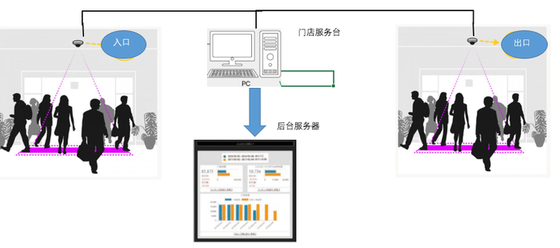
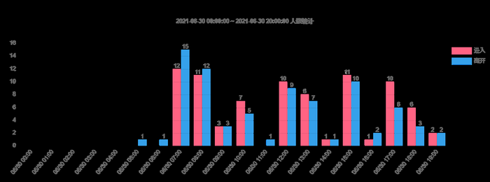
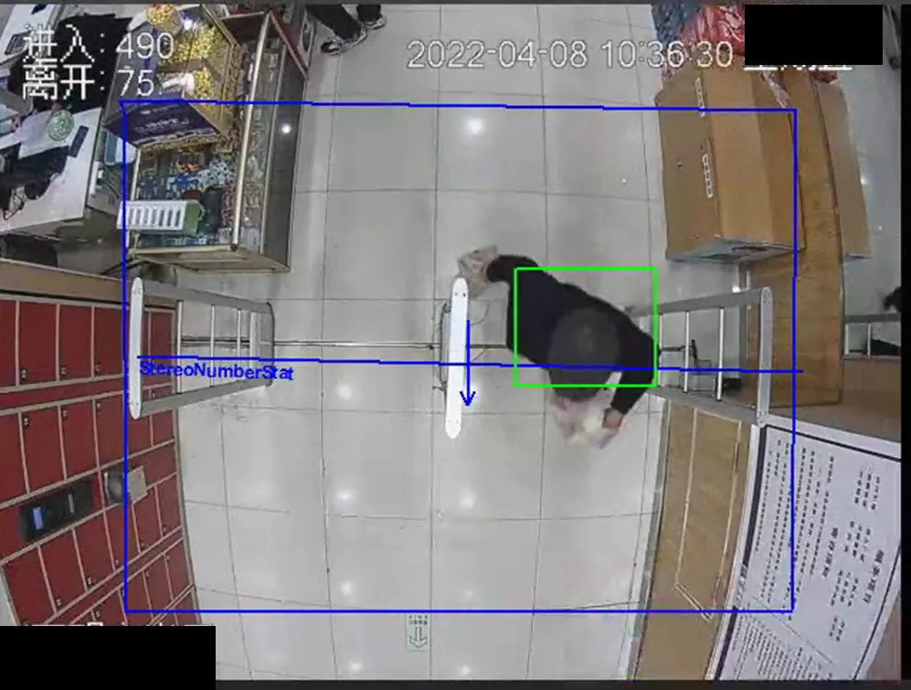

来店人数の定量把握
AIカメラにより人手を介さず、来店数を継続的に取得できるようになりました。
店舗の入口・出口にAIカメラを導入し、入退店人数のカウントとPOS販売データを組み合わせて、来店数と購買数の関係を分析しました。
使用機器：AIカメラ ｜ 種別：活用事例（小売店舗での導入実績）
店舗の入口・出口にAIカメラを設置し、通過する人物を検知して入店・退店数をリアルタイムにカウントするシステムを導入しました。
入退店カウントに使用したAIカメラ
入口・出口それぞれにカメラを設置し、店舗内のPCで集計、バックエンドサーバーでデータを管理・可視化する構成を導入しました。

入口・出口カメラ、店舗PC、バックエンドサーバーによる構成
時間帯ごとの入店・退店人数を集計し、来店のピーク時間帯や傾向を可視化しました。

時間帯別の入店・退店人数（実運用データ例）
実際の店舗出入口での検知画面です。累計の入店・退店人数がリアルタイムに表示され、通過する人物を検知・カウントしている様子を確認できます。

実際の検知画面（店舗名など非公開情報は加工済み）
来店人数データとPOSの販売データを組み合わせることで、「来店数に対してどれだけ購買につながったか」という購買率を分析できます。特にセール・催事期間中の実来店数と購買人数の関係を把握する用途で活用しています。
AIカメラにより人手を介さず、来店数を継続的に取得できるようになりました。
来店数と購買数を組み合わせた購買率の可視化が可能になりました。
セール期間中の来店増加や購買行動の変化を数値で確認できるようになりました。
来店・購買の傾向を数値で確認したい場面への活用を想定しています。
セール・催事の来店効果を数値で検証する用途に活用できます。
スタッフ配置の最適化に向けた混雑状況の把握に活用できます。
マーケティング施策の効果測定に活用できます。
来店・購買傾向の店舗間比較に活用できます。